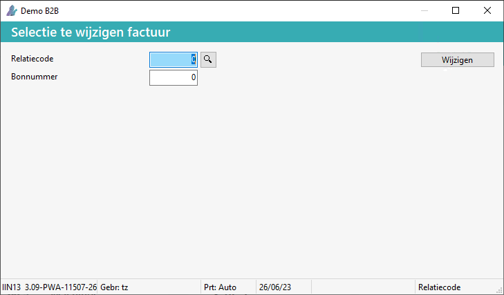
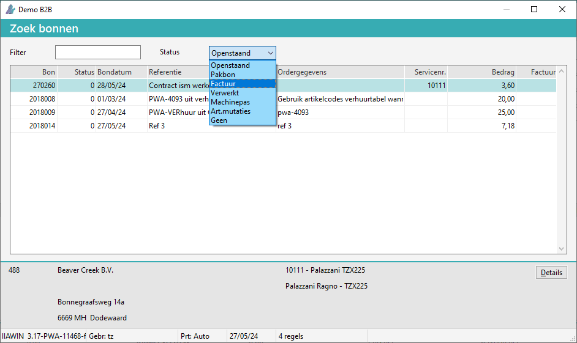

f
In Powerall Connect is het mogelijk een aangemaakte factuur te wijzigen t/m factuurstatus (2) Factuur, zie onderstaand afbeelding bij filter. De factuur is dan nog niet verwerkt in het grootboek en openposten.
Dit kan vooral handig zijn als er fouten constateert worden in een factuur voordat deze naar de klant gestuurd wordt. Hierdoor is het niet nodig de factuur te crediteren en een nieuwe factuur aan te maken.
Om een factuur te wijzigen, doorloopt u de volgende stappen:
Zoek de betreffende factuur op en onthoud het bonnummer van de bon die gewijzigd moet worden.
Ga naar Selectie te wijzigen facturen (FDW).
De status wordt Pakbon (1).

Ga vervolgens naar Wijzigen bonnen (FW).
Selecteer de relatiecode.
Open vervolgens in het veld Bonnummer het zoekvenster door F4 of het vergrootglas te kiezen (plak het bonnummer).
Selecteer bij filter Factuur.

Belangrijk: Dit zijn alleen wijzigingen van teksten, artikelen, aantallen en prijzen. Factuuradresgegevens kunnen niet aangepast worden.
Dubbelklik vervolgens op de te wijzigen bon.
Wijzig de benodigde gegevens.
Kies voor de knop Einde Bon.
Ga naar Kopie facturen (FFK).
Het scherm Print kopie facturen verschijnt.
De gewijzigde factuur is afgedrukt.
Opmerking: De factuur kan altijd opnieuw afgedrukt worden, via Kopie facturen (FFK).
Gerelateerde onderwerpen
Copyright ©